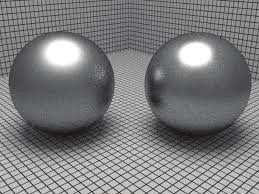

Physically Based Rendering 采样和重建
从电影到视频游戏，如今，计算机渲染图像无处不在。 基于物理的渲染与复杂的渲染器一起引入了逼真的渲染的概念和理论。
采样和重建
计算机作为一个离散计算器，要进行图像，文字，声音等数据的处理，必须将其转换成二进制的数据表示（离散数据），只能使用采样的方法来处理连续的数据。因为专业的关系，所以不能很好地理解这一章相关内容，只能了解个大概。
本章会介绍采样的理论，从连续域中的函数获取离散样本值，然后使用这些离散样本值重构于原始函数相似的新函数。
以下的内容大部分整理自pbrt的第七章 —— SAMPLING AND RECONSTRUCTION。
1 采样理论
在图形渲染领域，为了计算数字图像中的离散像素值，必须对原始连续定义的图像函数或信号进行采样。对于收集到采样的值并我们还需要进行重构，尽可能的转换回原始的连续函数或者信号。在基于光线追踪的渲染算法中，获得图像的数据唯一的方法就是通过追踪光线对其进行采样（从视角发射一条射线）。 由于采样和重建过程涉及近似，因此会引入称为混叠的误差，该误差可以多种方式表现出来，包括锯齿状边缘或动画中的闪烁。发生这些错误是因为采样过程无法从连续定义的图像功能中捕获所有信息。

上图给出了原始函数（坐）与采样后得到的函数（右）进行对比，黑色的点是通过采样得到的，然后在采样点上使用线性插值（Linear interpolation）的重建方式得到捕获的信号分布。可以看到，重建的结果和原始的函数存在着差异。
2 傅立叶变换
傅立叶分析的基础之一是傅立叶变换,大致的方法就是讲空间域(image space)的信号和函数通过傅里叶变换转变到频域(Frequency domain)，在频域分析相关的频谱特征。下面给出了空间域与频域的相互转化公式 :
这篇文章很好的解释了傅里叶变换公示(我还没看 ~ _ ~) : 如何理解傅里叶变换公式。
在傅里叶变换公示中常用到的一个定理就是卷积定理(The convolution theorem), 卷积定理指出 : 空间域的卷积值等于频域值的乘机，反之亦然。所以傅里叶变分析中的重要思想是可以证明俩个函数 F{f(x)g(x)} 可以证明他们是各自的傅立叶变换的卷积 F(w) 和 G(w)。而频率域两个函数乘积等于这两个函数在空间域(image space)的卷积。
F { } =
F {} = F {
}
3 采样与重建
使用频域空间分析，可以式调查采样的属性。根据每隔一定的距离进行一次采样，从形式上来讲，这相当于将函数乘以“ shah”或“脉冲串”函数。 脉冲串定义为 :
采样的脉冲串和原始信号相乘
其中T是采样周期或者采样率，下图(b)展示了离散的脉冲序列

（a）函数f(x) 乘以（b）shah函数 得到无限个比例缩放函数序列，这些序列表示每个采样点的值。
当脉冲串和原始信号相乘后得到的函数序列值（图c）是一个一个离散的点。通过重构滤波器函数并计算卷积，我们可以还原原始的函数分布。重构函数为 :
(1)
是卷积权重函数， 根据卷积定理, 通过分析频域（Frequency domain）中的采样函数，我们可以了解采样的分布情况。使用这些思想，可以通过频域（Frequency domain）空间中与另一个"shah" 函数进行卷积来描述空间域(image space)中的原始函数采样步骤。我们知道shah列函数在频率中依旧是一个shah序列，只不过他的采样周期在傅里叶变换是 1/T周期。在频率域，
和脉冲序列做卷积，得到的结果就是
在每个采样点都有一份相同的拷贝，因此与一个脉冲序列(shah)进行卷积会产生一个原始函数的拷贝的无限序列，其间隔等于脉冲序列(shah)的周期。下图©是原始信号的傅里叶形式与频率域的脉冲序列做卷积的结果(图a是
与频率域的脉冲序列做卷积的结果，每一个脉冲点上均有
的一份拷贝，他们之间的间隔就是脉冲间隔)。我们有了函数频谱的无限拷贝，只需丢弃所有光谱副本，但以原点为中心的频谱副本除外。

在理想的情况下，在频率域，为了除去中心光谱以外的所以光谱，我们设计一个滤波器 如上图(b)所示，与采样得到的傅里叶形式（上图(a)）相乘，试图得到原始信号的傅里叶分布（即上图©）。这个过程可以描述为如下的形式：
(2)
公式1给出了空间域下的采样重建过程，得到 ，而公式2则给出了频率域的表达形式，得到
。因此，理想的采样和重建的过程可以总结为，在空间域，对信号做一个均匀采样，然后对采样得到的数据做一个序列卷积，在图形中常用的替代方法是使用box函数进行重构，有效地平均周围某个区域内的所有样本值。
除了正弦函数的无限范围问题之外,理想的采样和重构方法最严重的实际问题之一就是假设信号受频带限制(band limited)。超出该定义范围的取值为0， 代表
没有该频率的分量。
空间域采样间隔为T的脉冲序列，在频率域，采样隔间变成了1/T。这是一个反比关系，如果空间域采样间隔越小，频率域下的采样间隔则越大。
混叠Aliasing
除了正弦函数的无限范围问题之外，理想的采样和重构方法最严重的实际问题之一就是假设信号受频带限制。 对于不受频带限制的信号，或者未针对其频率内容以足够高的采样率进行采样的信号(过低的采样频率)，前面所述的过程将重建出来的函数分布与原始的函数分布相差甚远这种现象被称为aliasing。
以过低的采样频率为例子，采样频率过低意味着使用了很宽的采样间隔T，转化到频率域，这对其的频率周期1/T过低，使得原本互相不重叠的采样分布重叠了。

由此重叠产生的效应我们称之为混淆。我们在对上图（a）的频谱进行一个带通滤波将得到上图（b）的结果。相比于原始的频谱分布，它的两端被切掉了，丢失了高频部分的信息。解决频谱重叠问题的一种可能解决方案是简单地增加采样率，直到频谱的副本足够远而不会重叠，从而完全消除混叠。奈奎斯特采样定理这个定理说，只要统一采样点的频率大于信号中出现的最大频率的两倍，就有可能从采样中完美地重建原始信号。
对于不受限制的信号(),不可能以足够高的采样率执行完美的重构。因此无论其频谱副本有多远（即我们使用的采样率有多高），都将始终有重叠。
抗锯齿技术
针对重叠的现象，目前已经有诸多的反走样技术，以下将介绍许多抗混叠技术，这些技术不仅可以提高各处的采样率。
(1) - Nonuniform Sampling 非均匀采样
在均匀采样的基础上对采样的间隔做一个随机扰动，使得采样的间隔不再是均匀分布。记表示0到1之间的随机数，则基于脉冲序列的一组非均匀样本为 :
上面的公式就是在原来的基础上加了 , 它的取值范围是
。然而，不均匀的采样趋于将规则的混叠伪像变成噪声，这对人的视觉系统的干扰较小。 在频率空间中，采样信号的副本最终也将随机移位，因此，在执行重建时，结果是随机误差而不是相干混叠。
以上的公式就是
(2) - Adaptive Sampling 自适应采样
这里的自适应针对的是原始信号频域的适应，注意到一般信号有高频和低频部分。对于低频部分，没必要使用很高的采样率去采样；而对于高频分布，则应该提高采样频率以防走样的产生。这项技术的初衷非常好，但比较难适用到现实中，因为通常情况下待采样的信号分布我们并不知晓。一些技术通过上两次的采样值对当前的信号频率进行评估，如果值差异过大则适当地提高采样频率。这种方法效果依旧不是很好。
(3) - Prefiltering 预滤波技术
消除采样理论提供的混叠的另一种方法是对原始函数进行滤波（即模糊处理），这样就不会保留无法以所使用的采样率准确捕获的高频。 尽管该技术通过从中删除信息来更改被采样函数的特征，但与混叠相比，模糊通常不那么令人讨厌。
了解像素
有两个关于像素的概念需要牢记, 首先，构成图像的像素在图像的平面上是离散点的点样本。第二个问题是最终图像的像素是在像素网格的离散整数(x,y)坐标处定义的，但是采样器会在连续的浮点(x,y)位置生成图形采样。
采样器接口
在光线追踪渲染通常在2D维度或者以外的维度上进行采样，因此一个采样点可以表示为n维向量。采样器的任务是在在[0,1)生成n-维的随机样本。采样空间序列也可以写成[0,1)^n。

采样器为了获取最终图像需要在每个图像样本生成一个n维度采样向量。上图我们可以看到像素(3,8)坐标被采样，并且在像素区域中有2个采样点。采样向量的前俩个维度给出了像素的偏移量，接下来3个维度对应了相机射线的时间和镜头位置。后续尺寸由蒙特卡洛光传输算法使用。
由于样本值必须小于一，因此定义一个常数OneMinusEpsilon，该常数表示小于1的最大可表示浮点常数。
#ifdef PBRT_FLOAT_IS_DOUBLE
static const Float OneMinusEpsilon = 0x1.fffffffffffffp-1;
#else
static const Float OneMinusEpsilon = 0x1.fffffep-1;
#endif
一个最简单的采样器方法就是随机均匀采样，但这种方法往往需要很多的采样数量才能使得渲染积分收敛到正确的结果。在相同采样数量下，我们寻求尽可能好和高效的采样方法。
采样质量评估：差异性
傅里叶分析为我们提供了一种评估2D采样模式质量的方法，但它仅使我们能够量化能够通过添加可表示的频带受限频率而增加间隔更均匀的采样所带来的效果。 考虑到图像边缘中存在无限的频率成分，并且对于Monte Carlo光传输算法需要n> 2维样本矢量，仅傅里叶分析还不足以满足我们的需求。
对于高维的采样向量的质量评估（n > 2），傅里叶分析已经不能满足我们的需求了。为此，数学家们提出了一种高维(n-dimensional)采样质量的评估策略—差异性（discrepancy）。对于分布良好的采样序列，具有较低的差异值。差异的基本思想是，给定[0,1)上的若干区域，统计每个区域的采样点数，然后比较每一个域的体积与其中样本的个数。通常，每一个区域的体积占整个区域的总体积比例应该是和该区域内样本的个数与总样本个数的比例是大致相当的。这就是差异的基本思想。最优的采样策略应该是这两个比值相等，即差异性为零。因此，我们的目的就是寻找使得差异性尽可能小的采样模式。
以下图所示的情况为例，阴影的部分面积为0.09，其中样本的数量为1。而整个区域的面积为1，且总样本的个数为4，因此这组点将估计盒子的面积为 1 / 4。所以这个区域的差异为 0.25 - 0.09 = 0.16

差异性的计算定义如，首先从采样空间的[0,1)的一个子空间B开始，数学公式为
其中
。
对于给定的采样点序列，该采样点对于子空间B的差异性为:
其中 为采样点散落到子空间b采样点数，
是子空间的面积，
表示集合的上确界。差异性的计算一般需要数值方法来近似求解，很少能够直接求解析解。差异性的主旨思想就是衡量采样点的分布情况，如果分布得不是很均匀，那么其差异性将会很高。
当然差异性得评估标准也有缺点：一些低差异性的点集内部可能会出现一些点过于聚集。这是低差异性的评估方法的固有缺陷导致。

由此衍生了另一种评估方法, 计算采样点集中的任意俩个采样点之间的最小距离，而采样点之间间隔的越近越好，采样可以得到的新信息就越少。使用上述的指标进行评价时，泊松分布采样（Poisson disk sampling）的表现最好。它能够保证所有采样点之间的距离都大于一个指定距离d，但是其效率远低于低差异性的采样方法。
Sampler类的接口
Sample类构造时需要指定每一个像素的采样数，声明一些通用的接口以供不同的采样策略进行复用。
class Sampler{
public:
// Sampler Interface
virtual ~Sampler();
Sampler(int64_t samplesPerPixel);
virtual void StartPixel(const Point2f& p);
virtual Float Get1D();
virtual Float Get2D();
CameraSample GetCameraSample(const Point2i &pRaster);
void Request1DArray(int n);
void Request2DArray(int n);
virtual int RoundCount(int n) const { return n; }
const Float *Get1DArray(int n);
const Point2f *Get2DArray(int n);
virtual bool StartNextSample();
virtual std::unique_ptr<Sampler> Clone(int seed) = 0;
virtual bool SetSampleNumber(int64_t sampleNum);
const int64_t samplesPerPixel;
protected:
int64_t currentSamplerIndex;
Point2f currentPixel;
std::vector<int> samples1DArraySizes, samples2DArraySizes;
std::vector<std::vector<Float>> sampleArray1D;
std::vector<std::vector<Point2f>> sampleArray2D;
private:
// Sampler Private Data
size_t array1DOffset, array2DOffset;
};
当开始渲染某一个像素时，需要首先调用Sampler类的StartPixel()方法并指定像素渲染坐标。
void Sampler::StartPixel(const Point2i &p) {
currentPixel = p;
currentPixelSampleIndex = 0;
array1DOffset = array2DOffset = 0;
}
samplesPerPixel储存每个像素的采样数量，currentPixel储存当前采样像素的坐标，而currentPixelSampleIndex指明当前进行到行到第几个采样。某一些应用场景可能会一次性要求获取当前采样向量中的m个一维或两维向量，由此我们声明下面的几个变量
std::vector<int> samples1DArraySizes, samples2DArraySizes;
std::vector<std::vector<Float>> sampleArray1D;
std::vector<std::vector<Point2f>> sampleArray2D;
以1D为例，samples1DArraySizes储存每个m的大小，sampleArray1D储存相应采样的点数，array1DOffset辅助获取采样点。然后使用下面的函数进行初始化：
void Sampler::Request1DArray(int n){
CHECK_EQ(RoundCount(n), n);
samples1DArraySizes.push_back(n);
sampleArray1D.push_back(std::vector<Float>(n * samplePerPixel));
}
上面的RoundCount用于某些特殊的采样算法对n进行调整，例如要求n是2的幂次方。每次获取sampleArray1D对应的采样序列，并使其加一：
const Float *Sampler::Get1DArray(int n) {
if (array1DOffset == sampleArray1D.size()) return nullptr;
CHECK_EQ(samples1DArraySizes[array1DOffset], n);
CHECK_LT(currentPixelSampleIndex, samplesPerPixel);
return &sampleArray1D[arrayOffset++][currentPixelSampleIndex * n];
}
提供一个GetCameraSample方便获取摄像机要用到的采样值：
CameraSampler Sampler::GetCameraSample(const Point2i &pRaster) {
CameraSampler cs;
cs.pFilm = (Point2f)pRaster + Get2D();
cs.time = Get1D();
cs.pLen = Get2D();
return cs;
}
当当前像素的这一次采样完成的时候，积分器需要调用StartNextSample()方法来通知采样器开始当前像素的下一次采样。
bool Sampler::StartNextSample() {
array1DOffset = array2DOffset = 0;
++currentSamplerIndex < samplesPerPixel;
}
而SetSampleNumber允许我们根据给定的参数sampleNum跳到第sampleNum采样点：
bool Sampler::SetSampleNumber(int64_t sampleNum) {
array1DOffset = array2DOffset = 0;
currentPixelSampleIndex = sampleNum;
return currentPixelSampleIndex < samplesPerPixel;
}
由于Sampler的实现类存储一些状态信息，因此在多个线程中使用同一个采样器是线程不安全的。Clone()方法用来生成一个该采样器的一个新实例供多线程使用，并接受一个参数，若采样器包含随机数生成器，可以通过该参数为新的采样器指定一个不一样的随机数种子。
最后，使用采样器的接口进行采样的过程大致如下：
sampler->StartPixel(p);
do {
Float v = a(sampler->Get1D());
v += b(sampler->Get1D());
v += c(sampler->Get1D());
} while (sampler->StartNextSample());